Lecture 5: Optics
1. Lens
1.1 Over-simplified Diagrams
在之前的课程中介绍 F-number 时，曾经使用过单镜片模型来描述相机镜头 (lens) 结构，如下图所示：
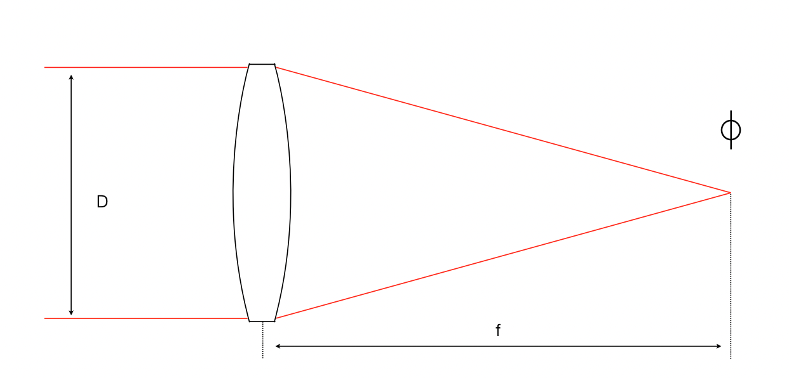
显然，这是一个过渡简化的模型，体现在两个地方：
- 不是单镜片，而是一组镜片形成的光学系统，因此焦距也不是镜片到传感器的距离
- D 不是镜片的直径，而是内部光圈的直径
有的镜头焦距固定，被称为定焦镜头；有的镜头焦距可变，被称为变焦镜头。通常变焦镜头的工艺要比定焦镜头更加复杂，在每一个焦距上要获得更好的成像质量难度也更大，因此这里存在价格与灵活度的权衡。下图是一个 400mm 定焦镜头的剖面图：
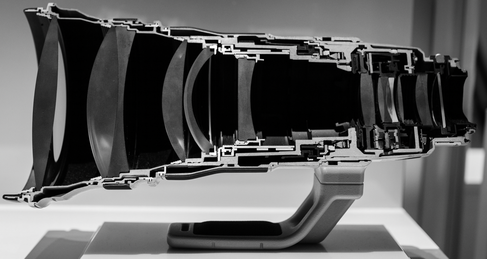
可以看出整个镜头由多个镜片构成，各个镜片的形状、大小不同。
1.2 Three Classes
针对全画幅 (35mm 胶片/传感器) 相机，按焦距范围，可以大致将镜头分成三类：
- (超) 广角镜头 (wide-angle lens)：< 35mm
- 普通镜头 (normal lens): 35mm - 85mm，其中 50mm 镜头捕捉的画面最接近人眼感受
- 长焦镜头 (telephoto lens): > 85mm
用三种焦段的镜头拍摄出的透视效果各不相同，举例如下：
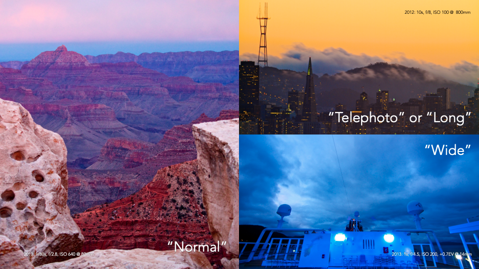
上图中，左图使用普通焦距镜头 (80mm) 拍摄；右上图使用长焦镜头 (800mm) 拍摄；右下图使用广角镜头 (14mm) 拍摄。
焦距越大，视角越小，画面中物体的纵深距离被压缩的程度越高，画面约扁平，相机的抖动越容易对成像结果造成影响；
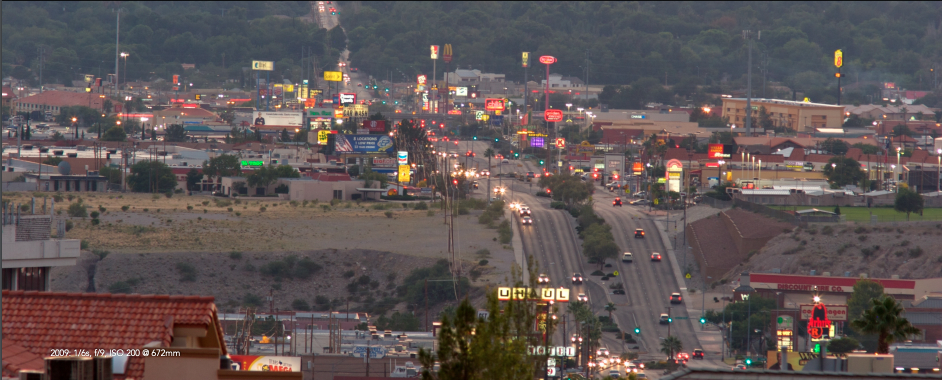
焦距越小，视角约广，画面周围的内容越多，越容易在照片的四个角上发生扭曲。用长焦拍摄，就像将一张照片的中心部分光学 (optically) 放大，用同样数量的像素填充画面的中心部分。
1.3 Focal Length & Perspective
要让主体在照片中占据的比例变大有两种方法：增加焦距、靠近主体。二者的区别在于，前者不改变透视 (perspective)，后者会改变透视：
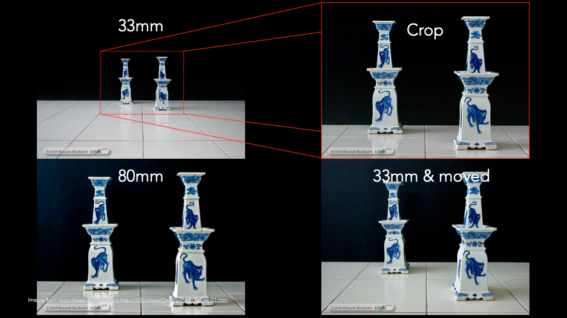
从上图中可以看出，「80mm」与「Crop」的结果类似，透视不变；而「33mm & moved」与「Crop」的结果不同，从图像底部的瓷砖上可以看出透视的变化。
在电影拍摄中，通过改变焦距扩大和缩小主体与近景、远景之间距离，同时移动摄像机使主体在画面中的大小保持不变的手法，被称为 Vertigo Effect 或 Dolly Zoom：
上述特性存在于市面上的所有镜头中，从超广角镜头到超长焦镜头。各个厂商都会在镜头正面或侧面标记焦段和相应的最大 F-number 值：
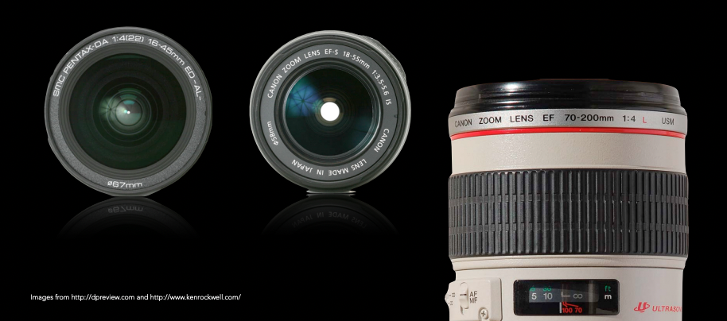
值得注意的是，取决于镜头制造的工艺和投入：
- 改变焦距时，外部镜身不一定需要伸缩
- 最大 F-number 值不一定随着焦距变化而变化
1.4 Tripod Collar
1.1 节中的 400mm 镜头剖面图中可以看到，在镜头下方有一个小支架 (tripod collar)。当镜头的重量超过相机机身的重量时，把相机镜头固定在三脚架上无法保持机身与镜头在三脚架上的平衡，这个小支架存在的意义就是让机身与镜头在三脚架上保持平衡。
2. Background Blur
2.1 Circle of Confusion
细节可通过下面的视频了解：
如果把所有光源都看作是点光源，不同距离的物体到达的距离不同，折射的角度不同，投射在底片或感光元件上的点 (圆圈) 大小不同。当后者取得极小时，为完美对焦；当后者较大时，则称为失焦。人眼对对焦的准确度有一定的容忍度，只要失焦程度在一定的范围内，主体看起来仍然是清晰的，我们称这个范围为景深 (DOF, depth of field/focus)，而弥散圆 (CoC, circle of confusion) 就是看起来恰好清晰的投射圆大小：
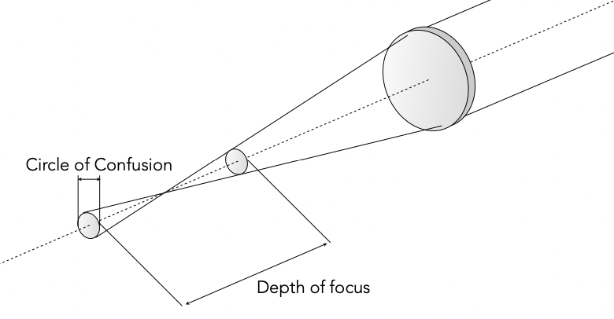
F-number 影响光圈大小，从而影响 DOF 的大小，如下图所示：
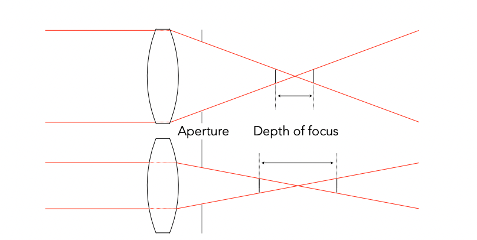
2.2 Bokeh
当彩色的灯光，如夜晚闹市中的灯光，从不同距离投射进相机，在景深外就会形成原型的光斑，这种光斑被称为 bokeh，举例如下：

在关注 bokeh 的时候，我们更加关注 bokeh 的质量，而不是数量。在照片中部的 bokeh 通常质量最好，形状较圆且亮度均匀；离中心越远，则越容易观察到形状扭曲，圆圈内部的光不均匀，质量越好的镜头在照片四周的成像质量越好。
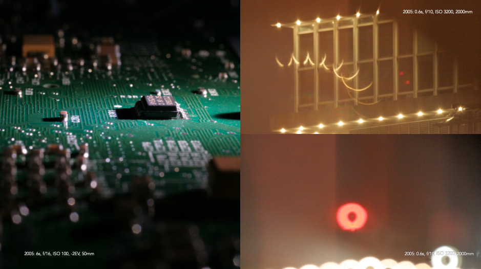
bokeh 的形状实际上就是光圈的形状，比如，从上边左图底部的 bokeh 中可以看到光圈呈七边形；从上边右下图可以看到，光圈呈现甜甜圈的形状，这是用镜片组反射用小镜身支持大焦距导致的。一些摄影师也会通过将钻了不同形状的孔的卡片放置在镜头前面来改变 bokeh 的形状，如在婚礼摄影中常用的心形 bokeh。bokeh 的质量即失焦点光源的成像质量，在一定程度上反映了相机景深范围内物体的成像质量，进而反映镜头整体成像质量。
3. Hyperfocal Distance
在拍摄照片的过程中，如果你希望得到最大的景深范围，就需要借助超焦距 (hyperfocal distance)。只要相机对焦在超焦距处的景物，假设为 10m，那么从超焦距一半处 (5m) 到无限远 (+∞) 的景物在人眼中都是清晰的 (acceptable sharp)。它的计算公式如下：
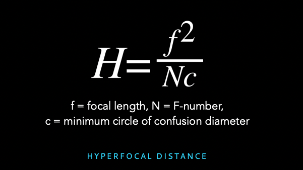
可以看出它的值与焦距、F-number 以及相机感光元件 (机型) 有关，一些网站和 Apps (如 PhotoPhills) 提供了相关参照表表方便摄影师使用。通常在使用广角镜头拍摄风景图时，会使用超焦距拍摄手法获取最大的景深；而使用长焦镜头拍摄时，由于超焦距已经在几十米之外，使用它获取更大景深的意义并不大。
实践中，摄影师常常将超焦距的规则反过来用：假设希望对焦的最近的物体距离 X 米，则将对焦点选择在 2X 米处的景物上，从而使得从 X 米到无限远处的景物都在景深范围内。
4. Image Stabilization
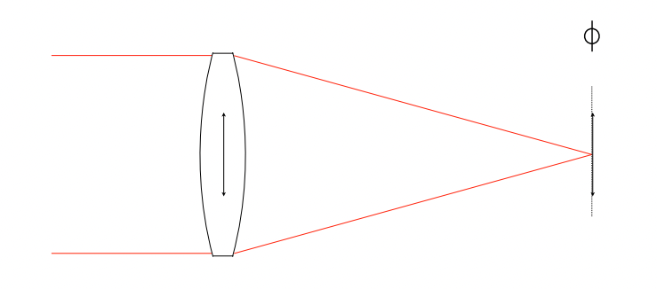
现代相机或多或少都提供了防抖功能。防抖功能的实现有两种思路：镜头防抖和机身防抖。镜头防抖就是在镜头内部抵消抖动；机身防抖就是在机身内部抵消抖动。现代的防抖技术通常能在 "1/focal length" 的经验法则基础上，降低 3-4 个 stops，甚至 4-5 个 stops。(具体数值是老师说的，我并未做相关调研)
5. Tilt-shift Lenses
还有一类镜头是移轴镜头 (tilt-shift lenses)，它能够支持摄影师调节镜片组与感光元件之间的夹角 (调节之前二者通常相互平行)。
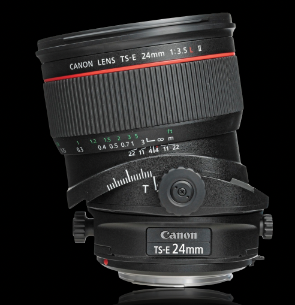
移轴镜头常被用于建筑摄影 (architecture)、风光摄影 (landscape) 以及微缩摄影 (miniaturization)，用于改变对焦平面 (focal plane)。如下图中的建筑：
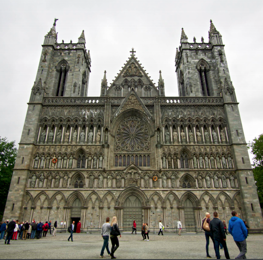
由于建筑上不同高度物体与相机的距离不同，就会形成这样的透视效果。加入我们想反映真实的建筑形状，则需要改变焦平面与建筑间的夹角，要么使用移轴镜头，要么只能牺牲构图将相机倾斜。
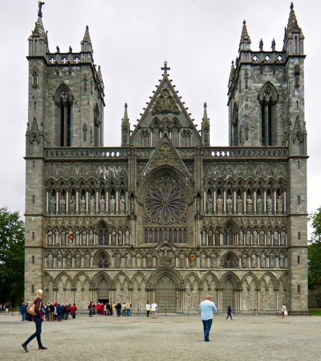
微距摄影举例如下：
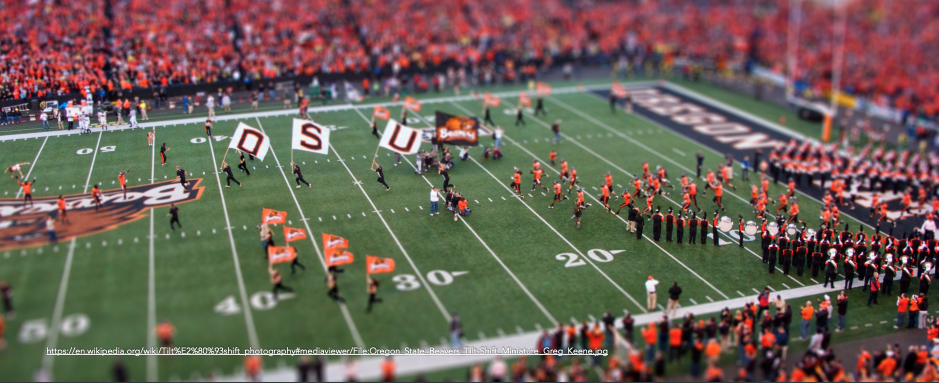
6. Filters
相机镜头表面通常有一个滤镜大小标识，如：
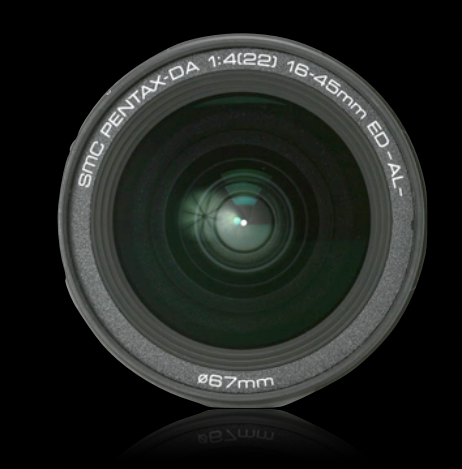
其底部的 「67mm」就是滤镜的大小标识，采买滤镜时一定要与之匹配。常见的滤镜包括 ND (Neutral Density)、GND (Graduated Neutral Density)、偏振 (Polarizer) 镜，如下图所示：
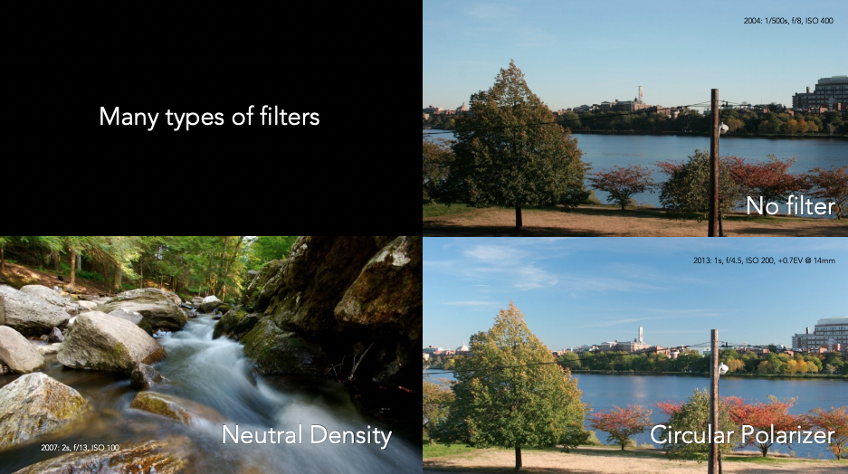
ND 滤镜常常用来均匀地降低整个画面的进光量，从而得到更长的曝光时间，捕捉风景中的运动；GND 则是在画面中的不同区域不同程度地减光，从而降低画面中的光比；偏振镜则可以使画面更鲜艳，同时消除一些反光，如：
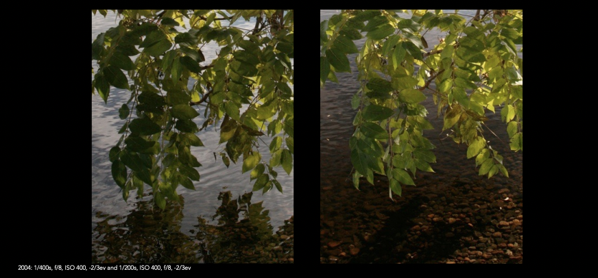
References
- Lecture 5, slides
- Wikipedia: Telephoto lens、Wide-angle lens、circle of confusion